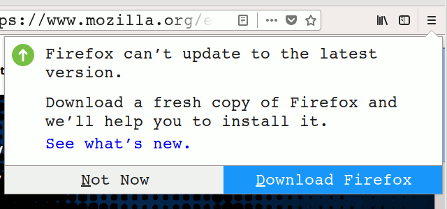

Objetivo
Script para actualizar Firefox a partir de Firefox Quantum.
TL;DR: Instalar en /usr/local/sbin el script
upgrade-firefox.
Historia y motivación
La actualización utilizando sudo ya no funciona.
Hace tiempo descargué Firefox en /opt y cada vez que
aparecía el mensaje indicando que Firefox no podía actualizarse
automáticamente (debido a falta de permisos)

realizaba la actualización ejecutando Firefox desde consola con sudo:
$ mkdir /tmp/asdf
$ sudo /opt/firefox/firefox --no-remote --profile /tmp/asdf
y luego gráficamente yendo a menú > Help > About Firefox. Allí debía esperar
a que Firefox descargara los archivos necesarios y luego reiniciaba la
aplicación.
Por último, al terminar la instalación se eliminaban los archivos generados
durante la actualización con sudo:
$ sudo rm -fr /tmp/asdf /root/.mozilla
NOTA: el sistema operativo utilizado es debian testing (buster), y los
permisos de /opt/firefox son root:root (no modificable por usuarios
normales).
Ahora, a partir de la versión 60.0, los pasos anteriores ya no son posibles
debido al bug 1323302: Disallow Firefox from running as sudo, ya
que se obtiene el siguiente mensaje de error al intentar ejecutar Firefox con
sudo:
Running Firefox as root in a regular user's session is not supported. ($XAUTHORITY is /home/XXX/.Xauthority which is owned by XXX.)
Solución: Creación de script para actualizar Firefox
A partir del problema anterior se busca crear un script que permita actualizar Firefox.
Para ello se realizará un cambio en la estructura de directorios utilizada actualmente:
-
En lugar de tener la última versión de Firefox en
/opt/firefoxe ir actualizando dicho directorio, se instalarán las distintas versiones de Firefox en el directorio/opt, utilizando como sufijo del directorio el número de versión (el contenido del tar de Firefox tiene siempre como directorio raizfirefox). -
La última versión de Firefox estará disponible en el directorio
/opt/firefox-latestcomo un enlace simbólico al directorio de prefijo/opt/firefox-cuya versión se corresponda a la más reciente.
Para utilizar el script de actualización, al que se llamará upgrade-firefox,
se deberá descargar manualmente una versión del sitio de Firefox y utilizar
esta con el script. Como ejemplo, si se descarga la versión 62.0.3 hay que
ejecutar el siguiente comando para instalarlo:
$ sudo upgrade-firefox firefox-62.0.3.tar.bz2
Por lo anterior, el script debe instalar el contenido del tar en /opt y
actualizar el link simbólico /opt/firefox-latest, lo que se realizará en
las siguientes etapas:
-
Obtener la versión de Firefox del archivo (
$1corresponde al nombre de archivo):version=$(basename "$1") version=${version#firefox-} version=${version%.tar.bz2} -
Descomprimir la nueva versión de Firefox en
/opt:tar xf firefox-$version.tar.bz2 -C /opt/ --transform 's/^firefox/firefox-'$version'/' -
Actualizar el link simbólico
/opt/firefox-latest:ln -sf -T firefox-$version /opt/firefox-latest
Para que los pasos anteriores puedan ejecutarse sin problemas debe verificarse previamente que:
-
El script se esté ejecutando con permisos de administrador:
if [ $EUID -ne 0 ]; then echo "Run with root permissions" >&2 exit 1 fi -
El script sea invocado con un solo parametro, que se corresponde al tar con la nueva versión de Firefox (¡y que el archivo exista!):
if [ $# -ne 1 ] || ! [[ "$1" =~ ^(.*/)?firefox-[0-9.]*.tar.bz2$ ]]; then echo "Usage: upgrade-firefox /path/to/firefox-<version>.tar.bz2" >&2 exit 1 fi if ! [ -f "$1" ]; then echo "File not exist" >&2 exit 1 fi -
Que la versión a instalar no esté ya instalada:
if [ -d /opt/firefox-$version ]; then echo "This version of Firefox is already installed" >&2 exit 1 fi -
Que la versión a instalar sea efectivamente más reciente que la ya existente. Aquí se utiliza el comando
dpkg --compare-versionspara comparar las versiones de Firefox ya que al hacer el script para Debian estamos seguros que el comando está disponible:current=$(find /opt -maxdepth 1 | grep -oP '/opt/firefox-\K\d.*' \ | LC_ALL=C sort -rn | head -1) if dpkg --compare-versions $current ge $version; then echo "This version of Firefox is not the latest" >&2 exit 1 fi
Adicionalmente y para evitar que se acumulen distintas versiones de Firefox en
el directorio /opt cada vez que se instale una nueva versión de Firefox se
eliminarán todas las versiones anteriores excepto la anterior versión más
reciente y todas aquellas que no posean un archivo de nombre CAN-BE-REMOVED
que se creará automáticamente luego de la instalación. Esto es así porque es
posible que se agreguen manualmente versiones específicas de Firefox en un
futuro y no se desea que sean borradas al instalar una nueva versión utilizando
el script.
Para realizar lo anterior se utilizará el siguiente código:
for old in $(find /opt -maxdepth 1 -name 'firefox-[1-9]*' | LC_ALL=C sort -rV | tail +3); do
[ -e "$old/CAN-BE-REMOVED" ] && rm -fr "$old"
done
El script completo se puede descargar del siguiente link.
Nota: el script contiene las modificaciones descriptas en el post Deshabilitando updates en firefox.